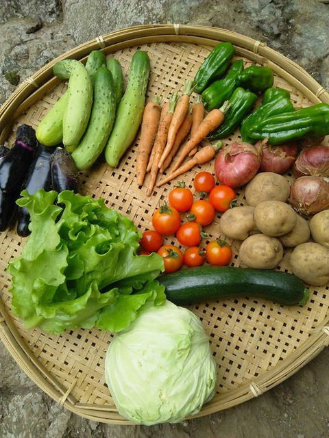
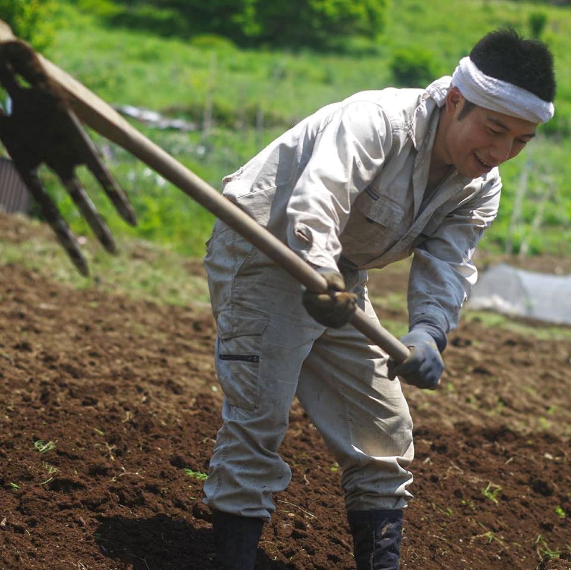

やまはた農園の取り組み
山梨県上野原市にある西原（さいはら）という山村で、無農薬・ 無化 学肥料の野菜づくりを学び、実践しています。それは簡 単なことでは ありません。その技術を受け継ぐことを、やまはた農園はミッション としています。
・山の資源、里の知恵や技を活かした農業をつくる。
・在来種・固定種の野菜をつくる。(現在は一部のみ)
・農閑期には山仕事(林業・炭焼き)にも取り組む。
ミッション
・山の資源、里の知恵や技を活かした農業をつくる。
・在来種・固定種の野菜をつくる。(現在は一部のみ)
・農閑期には山仕事(林業・炭焼き)にも取り組む。

冨澤 太郎 Taro Tomisawa
1985年神奈川県横浜市生まれ 16歳から22歳までをアメリカ・コロラド州で過ごす。この頃にサバイバルや森での暮らしに興味を持つ。帰国後、東京財団にて人材コーディネートに従事。2013年、里山での暮らしや文化に感銘を受け、上野原市西原へ移住。無農薬、無化学肥料での野菜づくりを行う。また里山の文化を受け継ぐべく西原で活動。
Contact
お問い合わせは以下のフォームからお願いいたします。畑仕事などで日中外出が多く、すぐにお返事できないかもしれません。余裕を持ってご連絡いただけると助かります。